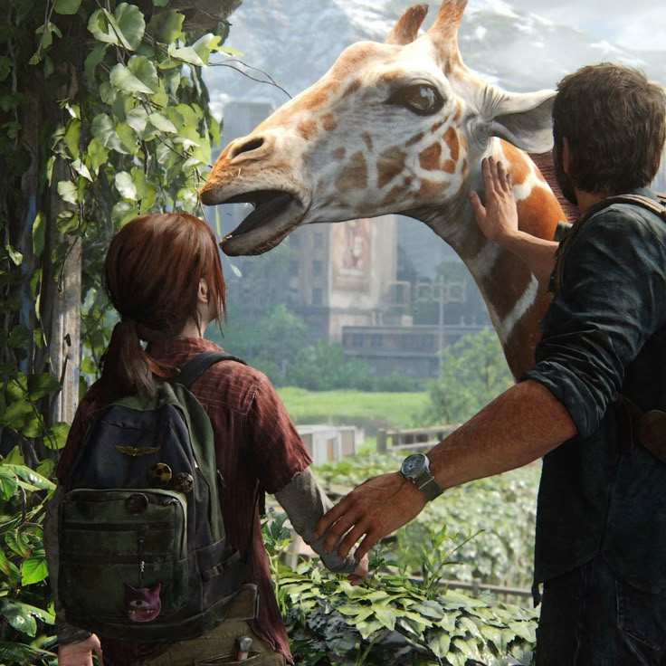

About the game
The Last of Us is a post-apocalyptic action-adventure game by Naughty Dog, telling the story of Joel and Ellie as they try to survive in a world ravaged by a deadly fungal infection
Main characters
- Joel:The main protagonist - tough, quiet, and deeply protective.
- Ellie:A young girl who may be the key to saving humanity due to her immunity, but because it could cost her her life, Joel will prevent it.
- Tommy:Joel's younger brother, a former Firefly who later helps Ellie.
- Dina:Ellie's girlfriend and companion during her journey in The Last of Us Part II.
- Abby:A soldier of the WLF, deeply tied to Joel's past; a central character in Part II(with Ellie).
Gallery
Take a look at screenshots from the game:
Interactive map
Click on the locations to learn more:
to view the description for Boston, Jackson, and Salt Lake City, click on the circle next to the label on the left, to view the description for Seattle, there is no such circle, so click on the location in the Washington area
Boston (Quarantine Zone)
The starting point of Joel and Ellie's journey under strict military control.
Jackson, Wyoming
A peaceful settlement led by Tommy, Joel's brother.
Seattle
The center of Ellie and Abby's stories in Part II, with intense conflict between factions.
Salt Lake City
The location of the Firefly hospital and the climax of the first game.